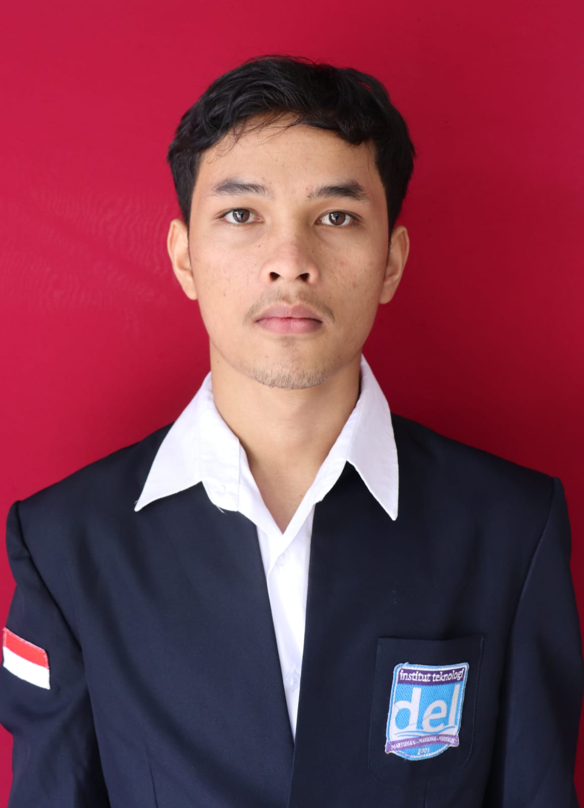

- Membangun layanan backend untuk manajemen retribusi pasar digital.
- Mengembangkan REST APIs dengan Laravel dan model relasional di PostgreSQL.
- Implementasi autentikasi berbasis JWT dan akses API yang aman.
Backend Engineer | Full Stack Developer | Siap Magang
Anisetus Bambang Manalu
Mahasiswa tingkat akhir Teknologi Rekayasa Perangkat Lunak di Institut Teknologi Del. Saya membangun sistem API-first dengan arsitektur rapi, desain database production-ready, dan autentikasi yang aman untuk kebutuhan nyata.
- 3.50/4.00 GPA
- 2023-2027 Del Institute of Technology
- 118+ contributions this year

Fokus saat ini
Backend Systems yang Scale
Laravel, PostgreSQL, Docker, JWT auth, dan full-stack delivery dengan Flutter.
Tentang Saya
Saya memiliki pengalaman langsung membangun sistem digital untuk kebutuhan nyata, mulai dari platform retribusi pasar, sistem administrasi sekolah, hingga platform booking. Saya menikmati proses mengubah alur kerja kompleks menjadi software yang terstruktur dan mudah dipelihara.
Keahlian Teknis
Laravel
Flutter
REST API
PostgreSQL
MySQL
Firebase
Go (Gin)
TypeScript
Python
PHP
Dart
Docker
Postman
TensorFlow
Scikit-learn
Tableau
Pengalaman
- Merancang APIs berbasis microservice dengan Laravel dan Docker.
- Implementasi arsitektur database-first dengan fungsi PostgreSQL.
- Integrasi layanan melalui gateway Nginx dan autentikasi JWT.
Sertifikasi & Penghargaan
Penghargaan Nasional
Silver Award - PEDAS 2025 (APTIKOM)
Pengakuan dari Kompetisi Data Nasional untuk problem solving berbasis data dan implementasi model.
SanberCode
Sertifikasi Pengembangan Web Laravel
Pengembangan API backend, implementasi MVC, dan fundamental aplikasi web production.
Dicoding
Pengantar Pemrograman Dasar
Prinsip-prinsip pemrograman inti, berpikir algoritmik, dan fondasi coding praktis.
Dicoding
Pengantar Rekayasa Perangkat Lunak
Software development lifecycle, praktik engineering, dan dasar desain sistem.
Pengalaman Organisasi
Feb 2024 - Sekarang
Departemen Kesenian dan Budaya, BEM
Mengorganisir acara seni dan budaya kampus, berkolaborasi dalam perencanaan dan eksekusi, serta mendukung publikasi digital aktivitas.
Nov 2024 - Sekarang
Del Data Science Club (DSDC)
Mengikuti workshop dan mini project tentang EDA, machine learning, dan workflow predictive modeling.
Nov 2023 - Nov 2024
Del Software Development Club
Praktik pengembangan software kolaboratif, pembelajaran backend, desain API, dan diskusi arsitektur.
Proyek Featured Showcase
Aplikasi real-world dari konsep hingga production
Platform TAPATUPA
Sistem Retribusi Pasar
Platform Pemerintah TAPATUPA
Sistem manajemen retribusi berbasis microservice untuk Pemerintah North Tapanuli. Dibangun dengan Laravel, PostgreSQL, dan Docker untuk skalabilitas tinggi.
Lihat Proyek →Sistem Booking Properti
Platform Properti Full Stack
Sistem Booking Homestay & Kost
Platform booking properti full-stack dengan REST API Laravel dan aplikasi mobile Flutter. Termasuk filtering lokasi dinamis dan kontrol akses berbasis role.
Lihat Proyek →Sistem Informasi Sekolah
Sistem Informasi Pendidikan
Sistem Informasi Sekolah SD Negeri 173100 Tarutung
Sistem informasi berbasis web untuk manajemen data sekolah. Mencakup modul data siswa, manajemen guru, administrasi kelas, dan manajemen nilai akademik.
Lihat Proyek →Pengembangan Terbaru
Lihat Semua di GitHubUntuk Recruiter
Tersedia untuk Magang dan Posisi Backend Junior
Terbuka untuk posisi magang dan junior backend engineer. Siap berkontribusi pada pengembangan API, desain database, serta integrasi layanan end-to-end.
- Stack utama: Laravel, PostgreSQL, MySQL, Flutter
- Nyaman dengan API architecture, JWT auth, dan Docker workflow
- Pengalaman kolaborasi tim yang kuat dan project-based delivery
Mari Bangun Produk yang Bermanfaat
Terbuka untuk kolaborasi magang, backend engineering, dan pengembangan full-stack.